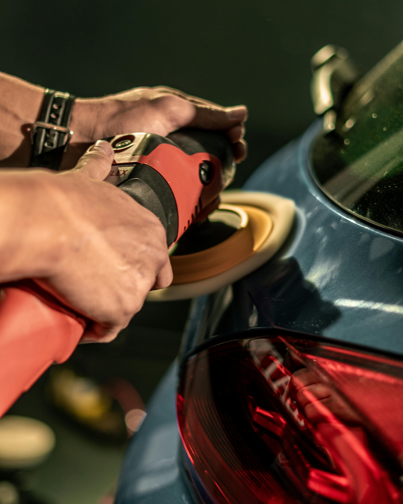
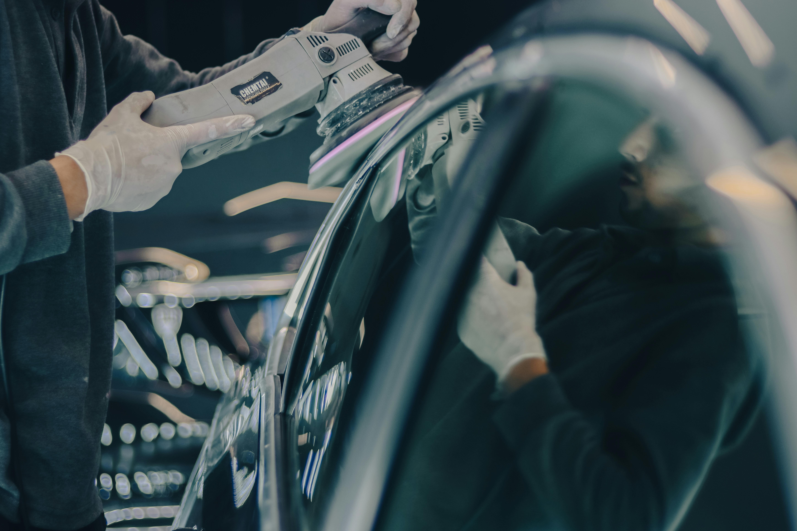

Tira mossas e bate-chapas
Correção de pequenas mossas e marcas com foco num acabamento limpo e bem alinhado.

Leiria · Cardosos
Tira mossas, películas, car detail e lavagem para devolver presença, brilho e proteção à sua viatura.
4,9 estrelas · 84 críticas · aberto até às 18:30
Acabamento cuidado
Em cada serviço, a Perfect Finish combina correção, limpeza e proteção para entregar uma viatura mais limpa, brilhante e bem apresentada.
Serviços
Correção de pequenas mossas e marcas com foco num acabamento limpo e bem alinhado.
Aplicação de películas para melhorar proteção, conforto e apresentação da viatura.
Limpeza profunda, polimento e cuidado de interiores e exteriores com atenção aos pequenos detalhes.
Lavagem manual e acabamento cuidado para manter a viatura limpa, protegida e pronta a circular.

Porque escolher
Em Leiria
Visite a oficina em Cardosos ou envie mensagem para combinar uma avaliação do serviço que a sua viatura precisa.
Clientes
“O trabalho feito no meu carro mostrou muito cuidado e dedicação aos detalhes.”
“Ótimo serviço, rápido, ótimo preço e excelente atendimento!”
“Excelência no atendimento por um preço justo. O carro ficou impecável.”
Contacto